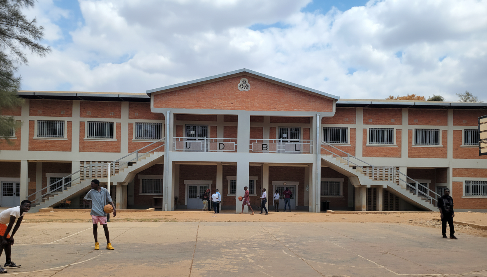

UNIVERSITE
DON BOSCO
DE LUBUMBASHI
L'université Don Bosco de Lubumbashi offre une éducation de qualité supérieure dans un environnement académique stimulant, fondé sur les valeurs salésiennes d'excellence et d'intégrité


À propos de nous
Une Institution d'Excellence
Depuis sa fondation, l'Université Don Bosco s'engage à former des professionnels et des citoyens responsables, prêts à relever les défis du monde moderne. Née de la fusion des instituts et écoles supérieurs :

École supérieure d'informatique Salama
École supérieure de Gouvernance Politique et Économique
Institut supérieur de philosophie Saint Jean Bosco
Institut de théologie Saint François de Sales
Nos Facultés
Découvrez les différents parcours proposés par notre université et choisissez celui qui correspond le mieux à vos ambitions
Actualités
Dernières nouvelles

CÉLÉBRATION DE SAINT JEAN BOSCO À L'UDBL
"Le meilleur atelier de travail sur soi-même, c'est le silence !". Révérend Père Guillermo Basanes. La journée du samedi 03 février 2024 a été marquée à l'université Don Bosco de Lubumbashi, par la célébration à la Faculté
CÉLÉBRATION DE SAINT JEAN BOSCO À L'UDBL
"Le meilleur atelier de travail sur soi-même, c'est le silence !". Révérend Père Guillermo Basanes. La journée du samedi 03 février 2024 a été marquée à l'université Don Bosco de Lubumbashi, par la célébration à la Faculté
CÉLÉBRATION DE SAINT JEAN BOSCO À L'UDBL
"Le meilleur atelier de travail sur soi-même, c'est le silence !". Révérend Père Guillermo Basanes. La journée du samedi 03 février 2024 a été marquée à l'université Don Bosco de Lubumbashi, par la célébration à la Faculté